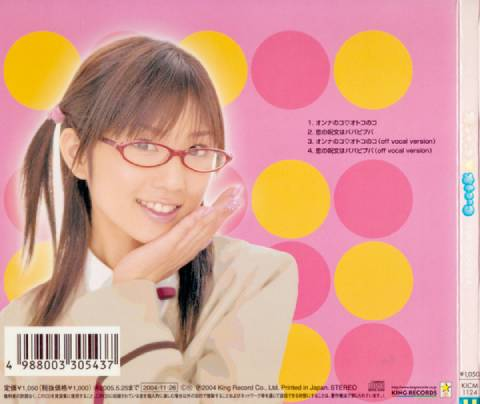

Yuko Ogura's 4th single (although classified as maxi-single), released November 26, 2004.
Onnanoko♡Otokonoko was used as the first ending theme song for the anime series School Rumble.
| # | Title | Len | Downloads |
|---|---|---|---|
| 1 | オンナのコ♡オトコのコ | 3:13 | FLAC MP3 |
| 2 | 恋の呪文はパパピプパ | 3:16 | FLAC MP3 |
| 3 | オンナのコ♡オトコのコ (off vocal version) | 3:12 | FLAC MP3 |
| 4 | 恋の呪文はパパピプパ (off vocal version) | 3:17 | FLAC MP3 |

Archive credits:
CD rip by Nemuri & Menelkir
Uploaded to Internet Archive by LZ_Arc
Back cover scan (low-res sadly) from Discogs